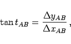
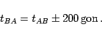
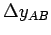
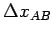
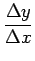
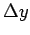
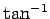
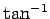

Inhalt Index DeskTop Bronstein

 Geometrie Ebene Trigonometrie Geodätische Anwendungen Koordinatentransformationen
Geometrie Ebene Trigonometrie Geodätische Anwendungen Koordinatentransformationen


Für zwei Punkte A(yA,xA) und B(yB,xB) in einem rechtwinkligen Koordinatensystem mit der von A nach B orientierten Strecke sAB und den Richtungswinkeln tAB,tBC gilt:
 |
(3.109b) |
|  | (3.109c) |
|  | (3.109d) |
Der Quadrant des Winkels t hängt von den Vorzeichen von  und  ab. Wird bei Rechnungen mit dem Taschenrechner  mit vorzeichentreuen Werten  und  eingegeben, dann erhält man mit den Tasten oder  einen Winkel t0, zu dem je nach Quadrant die in der folgenden Tabelle angegebenen Gon-Werte zu addieren sind.
eingegeben, dann erhält man mit den Tasten oder  einen Winkel t0, zu dem je nach Quadrant die in der folgenden Tabelle angegebenen Gon-Werte zu addieren sind.